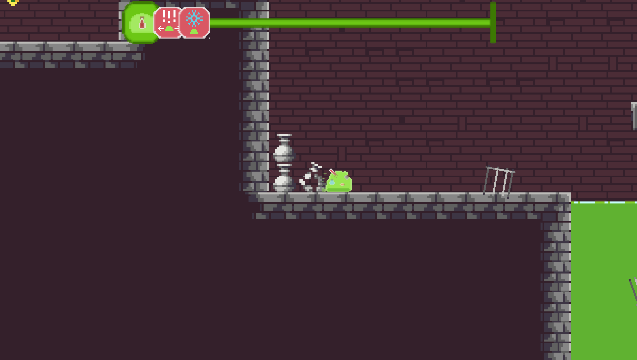

This game was a Game Jam project made for the GMTK Game Jam 2020.
I made this together with a friend of mine.
I ended up making all the code besides a couple of effects that get applied onto the player.
The theme of this game jam was "Out of controll".
The way we implemented this theme is by applying random effects to the player.
These can be things like forcing the players movement or inverting them, speeding the player up, increasing jump height, freezing the player, etc.
A Link to the the game provided below
The main gimmick of the game is the effects system.
This is the system that keeps applying the random effects to the player.
Before an effect gets triggered a UI element will be seen on screen this element will move towards the designated end point.
When it reaches this point the effect gets triggered.
This gives the player an idea of when the effect is going to get triggered and what effect it is going to be.
It is also possible for a double effect to trigger which means that shortly after the first effect a second effect will follow up basically creating a combo of effects.
This can be seen in the UI by the second image closely following the first image.

This system works by picking a random effect, taking this together with a semi randomized timeTillNextEffect variable and giving it to a coroutine.
This coroutine will then trigger the effect after the given time has passed.
The effects themself work independently from this system in their own classes.
public void CreateIcon(Sprite sprite, float TimeToTravel)
{
GameObject icon = Instantiate(imagePrefab, start.position, Quaternion.identity);
icon.transform.SetParent(parent);
Movingimage imageScript = icon.GetComponent();
imageScript.target = target;
icon.GetComponent().sprite = sprite;
imageScript.StartMovement(TimeToTravel);
}
public void QueNextEffect()
{
float timeTillNextEffect = Random.Range(minBetweenTime, MaxBetweenTime);
int nexteffectIndex = Random.Range(0, allEffects.Count);
StartCoroutine(TriggerEffect(timeTillNextEffect,allEffects[nexteffectIndex]));
if(Random.Range(0, 100) <= dubbleChanceValue)
{
doubleEffect = true;
Debug.Log("DoubleTrouble");
int nextDubbleffectIndex = nexteffectIndex;
while(nextDubbleffectIndex == nexteffectIndex)
{
nextDubbleffectIndex = Random.Range(0, allEffects.Count - 1);
}
StartCoroutine(TriggerEffect(timeTillNextEffect + 1, allEffects[nextDubbleffectIndex]));
}
}
private IEnumerator TriggerEffect(float time, Effects effect)
{
CreateIcon(effect.myIcon, time);
yield return new WaitForSeconds(time);
effect.Triggereffect(effectDuration);
if (!doubleEffect)
QueNextEffect();
else
doubleEffect = false;
}
The input in this project is centralized in a single InputManager class.
This class consists of three parts.
- Delegates to call for any type of input.
- Update functions to detect the input.
- Functions to call the specific input delegates.
The movement system gets called by one of these delegates who also takes with it the axis value of the WASD input (mainly A & D as its a 2D sidescroller). It then multiplies the axis value with several modifiers to end up with the value needed to move. It also checks for specific modifiers like if the player is in the air, reducing the speed of midair movement and if certain effects are active like inverted controls.
To make the player move I modify the players velocity instead of position to make sure that the movement does not interfere with the physics of the game by for example phasing through walls. I also switch out the physics material on the player to a material with less friction. By doing this the player character won't get stuck on small bumps or stick to walls which they will otherwise do. When the player stands still this material will be switched back to one with more friction. By doing this the player wont slide off of slanted surfaces or slide as if the floor is ice.
public void Move(float xAxis)
{
if(!inactiveControls)
{
myRigidbody.sharedMaterial = withoutFriction;
float xMove = xAxis * movementSpeed * 100;
xMove *= Time.deltaTime;
xMove *= movementModifier;
if(!grounded)
{
xMove *= MidAirSpeedModifier;
}
Vector2 toMove = new Vector2(0, 0);
if(!inverseControls)
{
toMove = new Vector2(xMove, myRigidbody.velocity.y);
}
else
{
toMove = new Vector2(-xMove, myRigidbody.velocity.y);
}
myRigidbody.velocity = toMove;
ManageAnimations(xAxis);
}
}